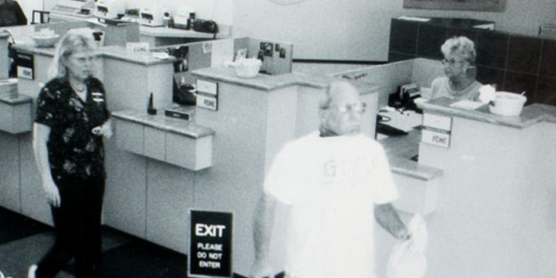
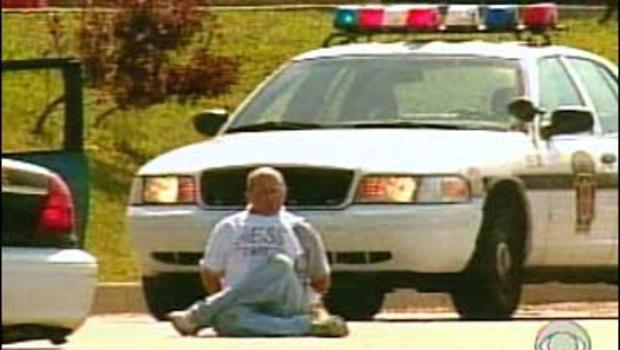
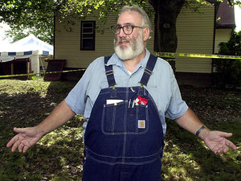

The Collar Bomb Heist:
When a Robbery Became so Much More
February 22, 2018
The Heist
On August 28th, 2003, Brian Wells, a 46 year old pizza delivery man, walked into a PNC Bank in Pennsylvania with an odd device around his neck and a strange cane. He walked up to the teller and handed a note demanding $250,000 and explaining that the device around his neck was a bomb and would go off in 15 minutes if they did not meet his demands. The teller, not having enough time to open the vault, gave Wells $8,702, and he promptly left.
Brian Wells leaving the PNC bank.
About fifteen minutes later, Police found Wells nearby and arrested him. Wells claimed that he was forced into the robbery and neck bomb by three men, and that he had to get the money and go on a hunt for the way to turn the bomb off.
Police called the bomb squad, but three minutes before they arrived, the bomb on Brian Wells' neck went off, leaving a hole in his chest, killing him instantly. Police investigated the body, finding his 'cane' was a homemade shotgun, as well as a note explaining what Wells would have to do to disarm the bomb.
Brian Wells resting against a cop car as bomb squad is called. Minutes later, the bomb would go off, killing him.
Police began using the note and going through the clues, which ended up leading them through the town. The police deturmined Brian would never have enough time to disarm the bomb, and that is was most likely a wild goose chase for the police.
The police headed to Wells' workplace, the Mama Mia's Pizzaria. It was there they found that the day of the Collar Bombing, Wells was to deliver two pizzas near the outskirt of the city, a TV transmission tower site off of a busy street, only accessible through a dirt road. Next to the tower stood the house of William "Bill" Rothstein, a 59 year old unmarried handymand.Rothstein let news and media into his house and backyard to try to see what was going on at the closed off tower, but when they couldn't find anything, they left.
Bill Rothstein at his house during the Investigation.
September 20, 2003
On September 20, 2003, Bill Rothstein called the local police to report a frozen body in the freezer in his garage. Rothstein was put under custody, and explained that the body was Marjorie Diehl-Armstrong, his ex-girlfriend's, boyfriend, who she shot in a dispute over money. She came to him, wanting help cleaning up from the murder.
The next day, Diehl-Armstrong was arrested. Rothstein was withheld, but that did not matter. In january of 2005, Diehl-Armstrong pleaded guilty and mentally ill. Rothstein, however, had deid of Lymphoma in 2004.
Marjorie Diehl-Armstrong
The Connection
In April of 2005, federal agents were contacted because Diehl-Armstrong confessed that the murder of her boyfriend was related to the Wells case. When the FBI came to interrogate her, she told them that she had supplied kitchen timers for the bomb and knew about the plot, but was not a part of it. She also said that Wells was in on the plan, and not just a victim, as well as Rothstein.
Then, just a few months later, a witness came forward and told FBI that an ex-television repairmen, now a crack dealer, Kenneth Barnes, was also involved in the Collar Bomb Heist. Already in jail and facing more time, Barnes agreed to supply information for a reduced sentance.
Barnes confirmed that Diehl-Armstrong was the mastermind, and that she wanted to money to hire a hitman to kill her father, before he spent all of her inheritance money.
Kenneth Barnes, Ex-Crack Dealer and would be Hit-Man
Cased Closed
In July 2007, the US attourney's office in Erie, Pennsylvania, held a conference, refering to a 'Major break' in the Wells case.
US attorney Mary Beth Buchanan announced that Barnes and Diehl-Armstrong would be found guilty of carrying out the crime, along with the late Rothstein and Wells. It was explained that Wells was originally a conspirator, but at some point, became an 'Unwilling Participant' and actually became the hostage.
Armstrong wanted the money, to pay Barnes to kill her father for more money, but what about Wells and Rothstein?
As it turned out, Wells had a relationship with a prostitute, and the chance of a payday was enough incentive for him to go through with the plan. It was only the afternoon of the day of the heist that he realized he had been double-crossed.
As for Rothstein, many people believe he was the mastermind of the entire heist, and not Diehl-Armstrong. For Rothstein, it was never about the money, and it was never about Wells succeeding. He wanted to create a puzzle which would not be solved for years. He redirected everyone, from the news and police during the crucial days after the heist. By calling the police about the murder of Diehl-Armstrong's boyfriend, he ratted her out before she could rat him out, and in the end, he got what he wanted. A puzzle that confused the people chasing after answers for years, and he got away scott free.